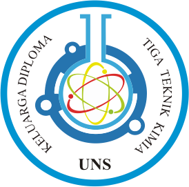
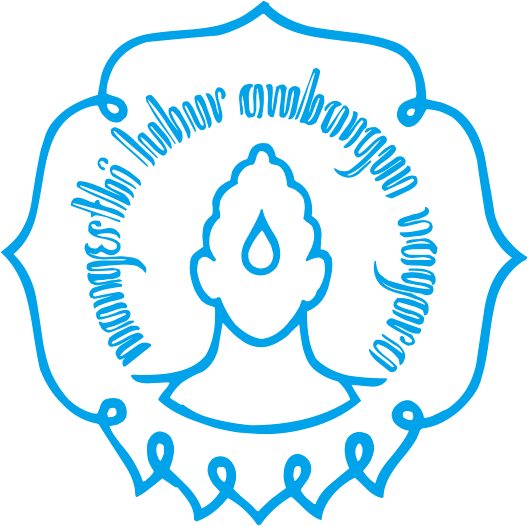
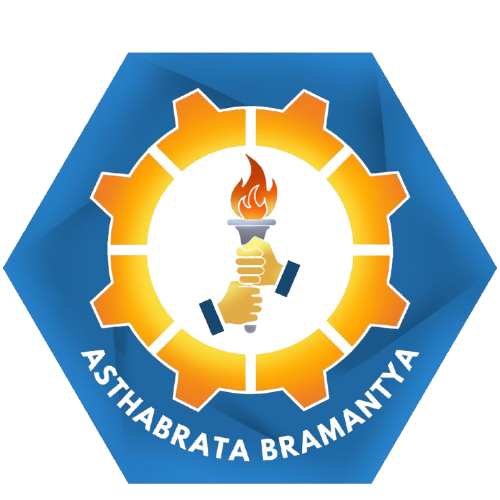

Visi
Menjadikan KADIKA wadah kebersamaan, pengembangan diri, dan pembelajaran berkelanjutan bagi mahasiswa Diploma Tiga Teknik Kimia, dengan semangat kekeluargaan, kolaborasi, dan profesionalisme.

KADIKA SV UNS

KELUARGA DIPLOMA TIGA TEKNIK KIMIA
KABINET ASTHABRATA BRAMANTYA
Selamat datang di website resmi KADIKA SV UNS. Ruang informasi, kolaborasi, dan cerita keluarga Teknik Kimia.
MENGENAL KADIKA
KADIKA SV UNS merupakan Keluarga Diploma Tiga Teknik Kimia Sekolah Vokasi Universitas Sebelas Maret. Organisasi ini menjadi wadah untuk membangun hubungan baik, mengembangkan potensi, dan meningkatkan solidaritas seluruh mahasiswa.
Menjadikan KADIKA wadah kebersamaan, pengembangan diri, dan pembelajaran berkelanjutan bagi mahasiswa Diploma Tiga Teknik Kimia, dengan semangat kekeluargaan, kolaborasi, dan profesionalisme.
KADIKA SV UNS bertujuan untuk membentuk Mahasiswa Diploma Tiga Teknik Kimia yang bertaqwa kepada Tuhan Yang Maha Esa, menguasai ilmu pengetahuan dan teknologi serta mempunyai kemampuan non akademis yang dapat bermanfaat bagi diri sendiri, masyarakat, bangsa, dan Negara.
RUANG KOLABORASI
Yuk mengenal departemen KADIKA bersama proker-prokernya.
Satu keluarga, banyak cerita, bersama menciptakan karya dan memberi makna.
KADIKA SV UNS · ASTHABRATA BRAMANTYALANGKAH KECIL, DAMPAK BESAR
Setiap departemen memiliki peran dan program kerja yang saling melengkapi. Temukan ruang untuk belajar, berkarya, dan berkontribusi.